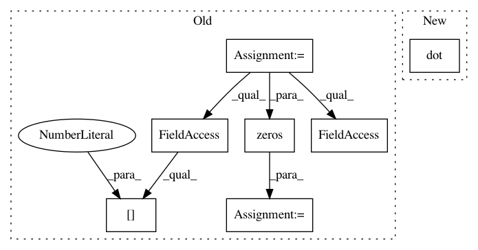

9cbd2d98f7f2230fd0eb1248c361728805e2c784,PyPi/algorithms/td.py,WeightedQLearning,_next_q,#WeightedQLearning#Any#,184
Before Change
means = np.zeros((1, self.mdp_info["action_space"].n))
sigmas = np.zeros(means.shape)
actions = self.mdp_info["action_space"].values
for i, a in enumerate(actions):
sa_n = [next_state, np.array([a])]
sa_n_idx = tuple(np.concatenate((next_state, np.array([a])),
axis=1).astype(np.int).ravel())
means[0, i] = self.approximator.predict(sa_n)
sigmas[0, i] = self._sigma[sa_n_idx]
if self.sampling:
samples = np.random.normal(np.repeat(means, self.precision, 0),
np.repeat(sigmas, self.precision, 0))
max_idx = np.argmax(samples, axis=1)
max_idx, max_count = np.unique(max_idx, return_counts=True)
count = np.zeros(actions.shape[0])
count[max_idx] = max_count
w = count / self.precision
else:
raise NotImplementedError
sa = [np.repeat(next_state, actions.shape[0], axis=0), actions]
W = np.dot(w, self.approximator.predict(sa))
return W
After Change
else:
raise NotImplementedError
return np.dot(w, means.T)[0]
class SpeedyQLearning(TD):
In pattern: SUPERPATTERN
Frequency: 3
Non-data size: 7
Instances
Project Name: AIRLab-POLIMI/mushroom
Commit Name: 9cbd2d98f7f2230fd0eb1248c361728805e2c784
Time: 2017-08-31
Author: carlo.deramo@gmail.com
File Name: PyPi/algorithms/td.py
Class Name: WeightedQLearning
Method Name: _next_q
Project Name: nipy/dipy
Commit Name: ad567a1b6694efecf5b52c013b7f507ca57d3df3
Time: 2016-02-02
Author: mrbago@gmail.com
File Name: dipy/reconst/dti.py
Class Name:
Method Name: tensor_prediction
Project Name: markovmodel/PyEMMA
Commit Name: e1adf9416201a9debe4036f1f1ceb83caf6f962a
Time: 2018-02-04
Author: fabian.paul@mpikg.mpg.de
File Name: pyemma/coordinates/tests/test_vamp.py
Class Name: TestVAMPSelfConsitency
Method Name: test